projetos realizados
Alfabeto no Quotidiano
Este trabalho consistiu em fotografar todas as letras do alfabeto em ambientes incomuns, de forma a que todos se encontrassem sob o mesmo tema. No meu caso, fotografei, com a ajuda de um drone, telhados de edifícios da minha cidade, a Guarda. Posteriormente, realizou-se o desenho das mesmas letras a linha e/ou mancha.
A Cadeira
Este trabalho teve como objetivo entender mais sobre a estrutura e construção dos mais variados tipos de cadeiras, a partir da pesquisa de genótipos e fenótipos, e da elaboração de uma perspectiva explodida.
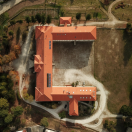
Este trabalho consistiu em fotografar todas as letras do alfabeto em ambientes incomuns, de forma a que todos se encontrassem sob o mesmo tema. No meu caso, fotografei, com a ajuda de um drone, telhados de edifícios da minha cidade, a Guarda. Posteriormente, realizou-se o desenho das mesmas letras a linha e/ou mancha.
A Cadeira
Este trabalho teve como objetivo entender mais sobre a estrutura e construção dos mais variados tipos de cadeiras, a partir da pesquisa de genótipos e fenótipos, e da elaboração de uma perspectiva explodida.
T-shirt relativa ao Alfabeto
Este trabalho associou-se ao primeiro trabalho referido, na medida em que nos foi imposto utilizar esses desenhos para criar um design de uma t-shirt.
Artefacto de Iluminação
Para este projeto deveríamos ter como base uma obra audiovisual, tendo sido, no meu caso, o filme Dunkirk, a partir da qual teríamos de desenvolver um candeeiro, com base numa figura de estilo.
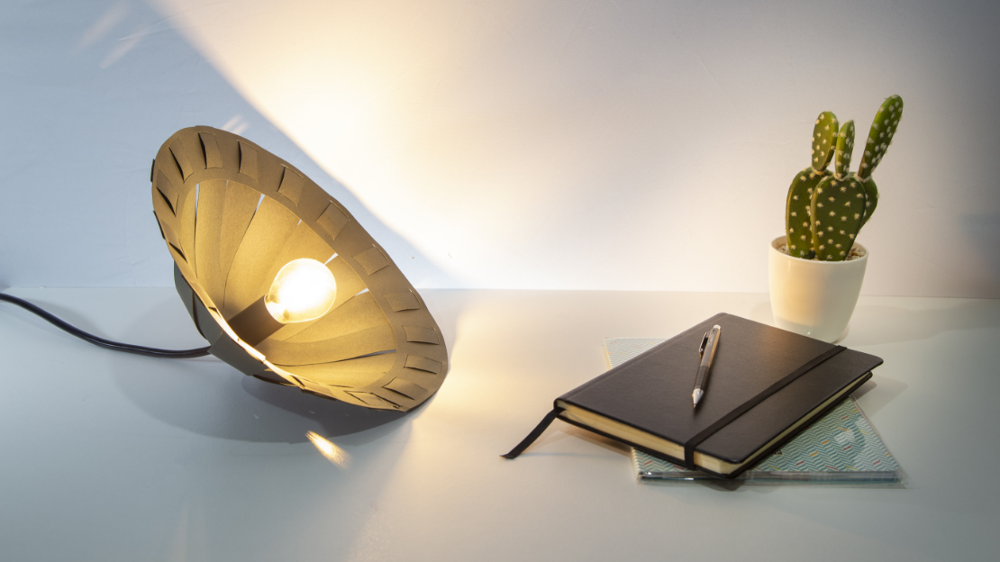
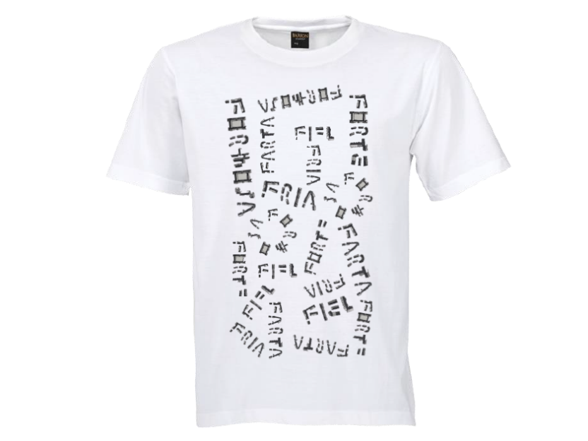
Este trabalho associou-se ao primeiro trabalho referido, na medida em que nos foi imposto utilizar esses desenhos para criar um design de uma t-shirt.
Artefacto de Iluminação
Para este projeto deveríamos ter como base uma obra audiovisual, tendo sido, no meu caso, o filme Dunkirk, a partir da qual teríamos de desenvolver um candeeiro, com base numa figura de estilo.
projetos realizados
Queijo da Serra da Estrela
Neste projeto foi realizado um intenso trabalho de pesquisa sobre a Indústria Alimentar Portuguesa, especificamente sobre o Queijo da Serra da Estrela. Após realizada uma paginação, foi aindo realizado um vídeo relacionado ao tema.
A Marca Alma
Para este trabalho de grupo, criei, com colegas uma marca cujo principal produto de venda seriam as Raivas de Aveiro. A esta demos o nome de Alma.
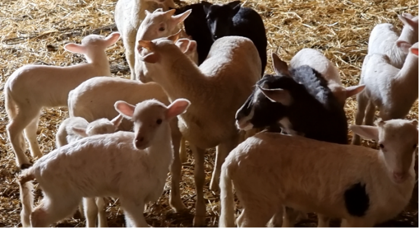
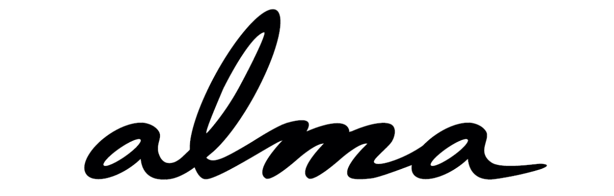
Neste projeto foi realizado um intenso trabalho de pesquisa sobre a Indústria Alimentar Portuguesa, especificamente sobre o Queijo da Serra da Estrela. Após realizada uma paginação, foi aindo realizado um vídeo relacionado ao tema.
A Marca Alma
Para este trabalho de grupo, criei, com colegas uma marca cujo principal produto de venda seriam as Raivas de Aveiro. A esta demos o nome de Alma.
Desenvolvimento de Produtos para a Alma
Após a criação da marca e do respetivo manual de normas, foi altura de criar 3 produtos para a Alma: um mostrador, o packaging, e um prato de apresentação para as Raivinhas.
Animação
Para o desafio do projeto "Cover Me", no qual tive de realizar uma animação em vídeo, tendo como mote a interpretação contemporânea do que é entendido como "capa de álbum", a minha animação obteve como tema a antítese entre Marrocos Turístico que conhecemos na Europa vs A realidade social dos habitantes do país.
Este processo incluiu, ainda, a realização de um storyboard.
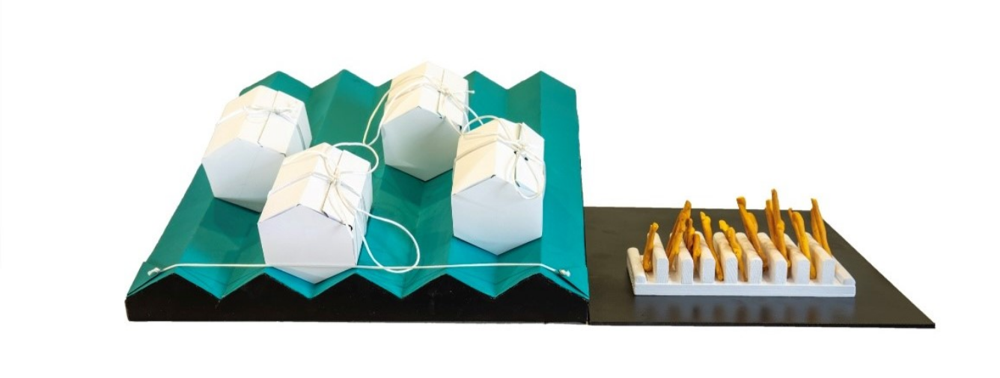
Após a criação da marca e do respetivo manual de normas, foi altura de criar 3 produtos para a Alma: um mostrador, o packaging, e um prato de apresentação para as Raivinhas.
Animação
Para o desafio do projeto "Cover Me", no qual tive de realizar uma animação em vídeo, tendo como mote a interpretação contemporânea do que é entendido como "capa de álbum", a minha animação obteve como tema a antítese entre Marrocos Turístico que conhecemos na Europa vs A realidade social dos habitantes do país.
Este processo incluiu, ainda, a realização de um storyboard.

Cartaz Binaural, Nodar
Este projeto consistiu em realizar um cartaz informativo sobre, no nosso caso, a Binaural, Nodar.
Paginação para a aldeia da Cerdeira
Realizei, também em grupo, uma paginação sobre a aldeia da Cerdeira, uma das localidades integradas nas Aldeias do Xisto.
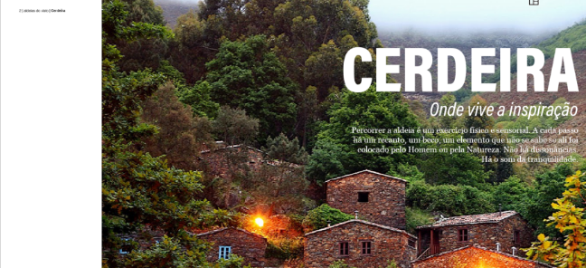
Este projeto consistiu em realizar um cartaz informativo sobre, no nosso caso, a Binaural, Nodar.
Paginação para a aldeia da Cerdeira
Realizei, também em grupo, uma paginação sobre a aldeia da Cerdeira, uma das localidades integradas nas Aldeias do Xisto.
 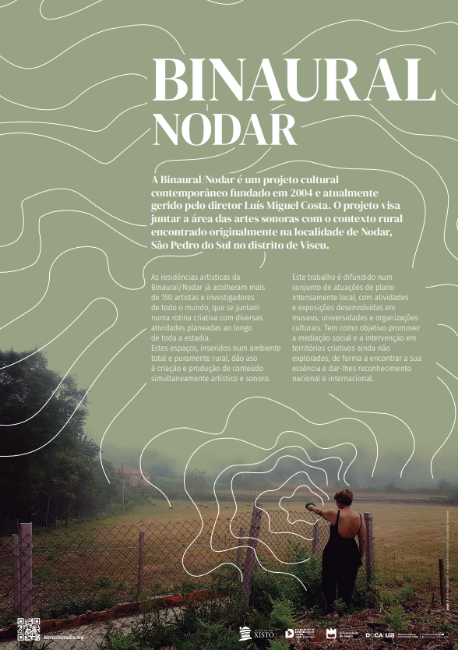
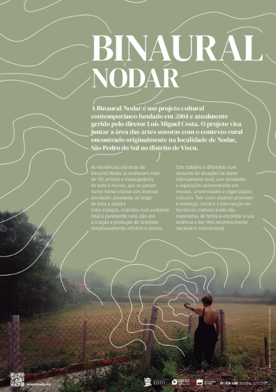
Paragem de Autocarro
Com particular gosto por este projeto relacionado ao mobiliário urbano, desenvolvi uma paragem de autocarro utilizando essencialmente vidro e alumínio extrudido, abrigada por todos os lados, mas com espaço suficiente para pessoas de mobilidade reduzida.
Bilheteira para Moliceiros
Num exercício de grupo com várias vertentes, surgiu a marca "Movia". Desenvolvemos, então, uma máquina de venda de bilhetes para moliceiros, desenhámos a vertente interativa da sua interface e criámos toda a identidade visual da marca.
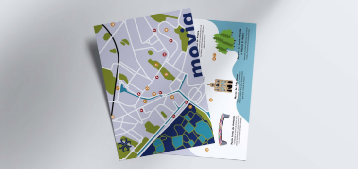
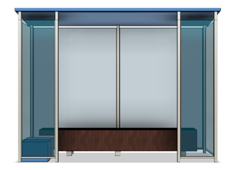
Com particular gosto por este projeto relacionado ao mobiliário urbano, desenvolvi uma paragem de autocarro utilizando essencialmente vidro e alumínio extrudido, abrigada por todos os lados, mas com espaço suficiente para pessoas de mobilidade reduzida.
Bilheteira para Moliceiros
Num exercício de grupo com várias vertentes, surgiu a marca "Movia". Desenvolvemos, então, uma máquina de venda de bilhetes para moliceiros, desenhámos a vertente interativa da sua interface e criámos toda a identidade visual da marca.